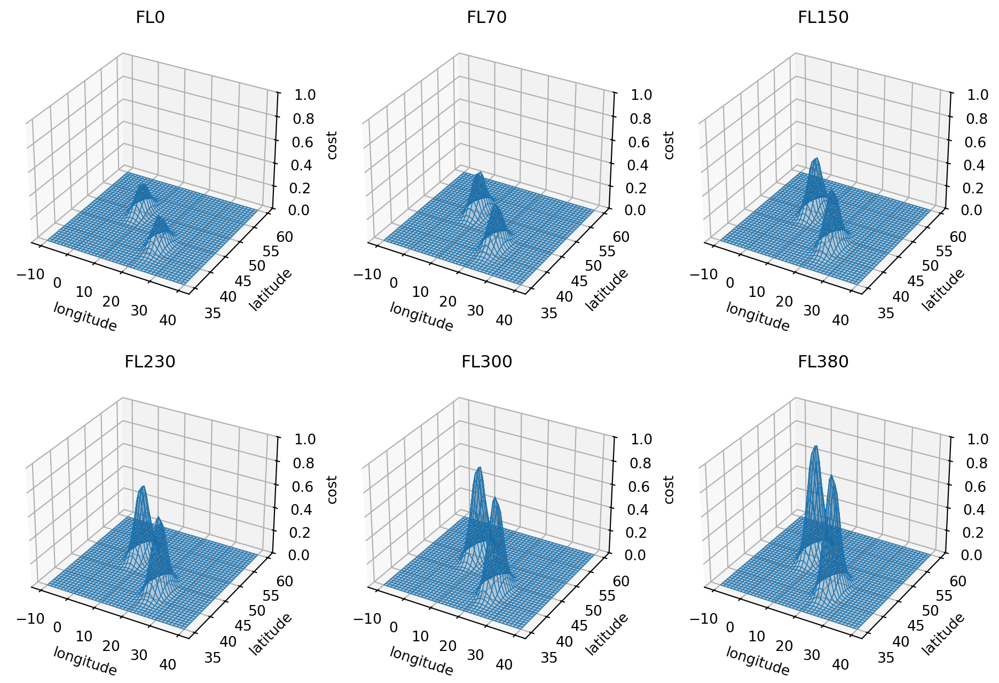
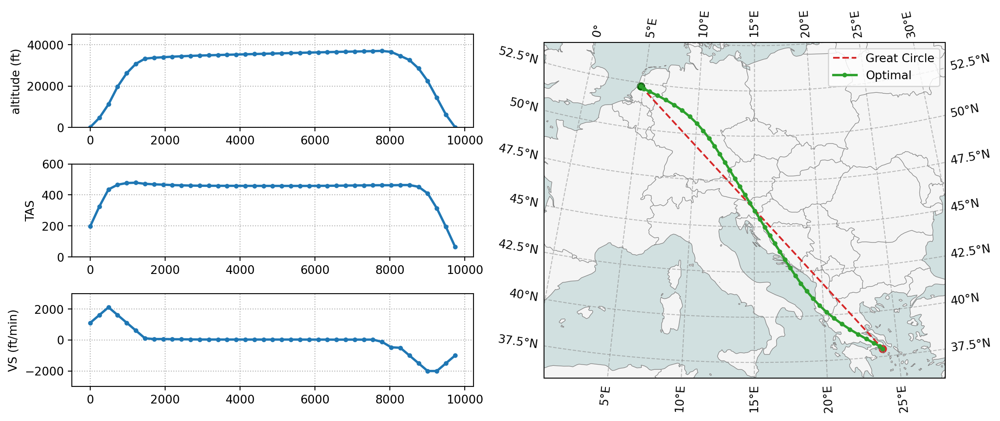
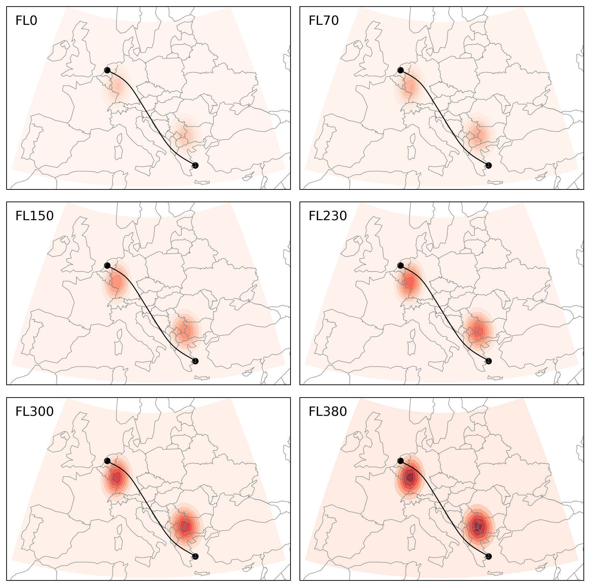
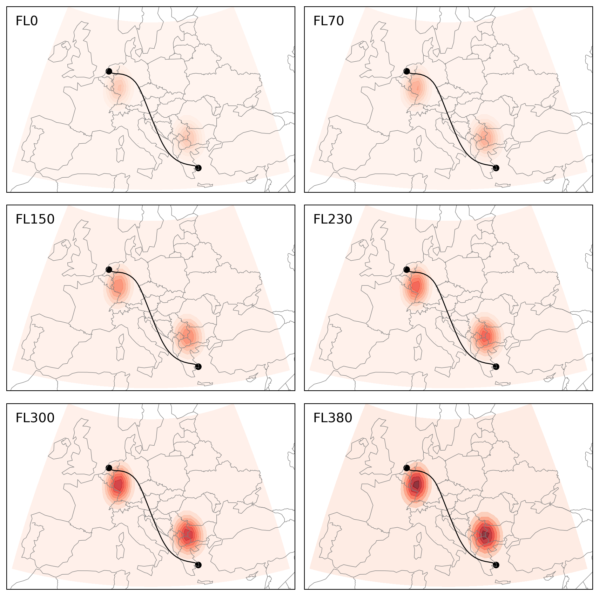
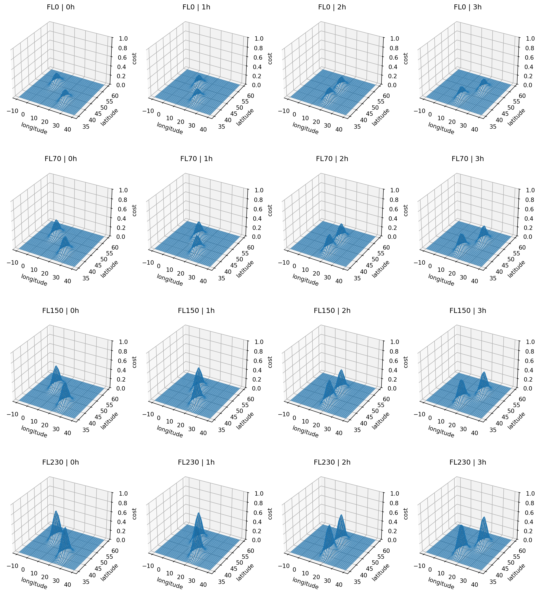
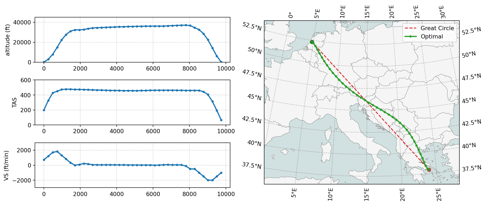
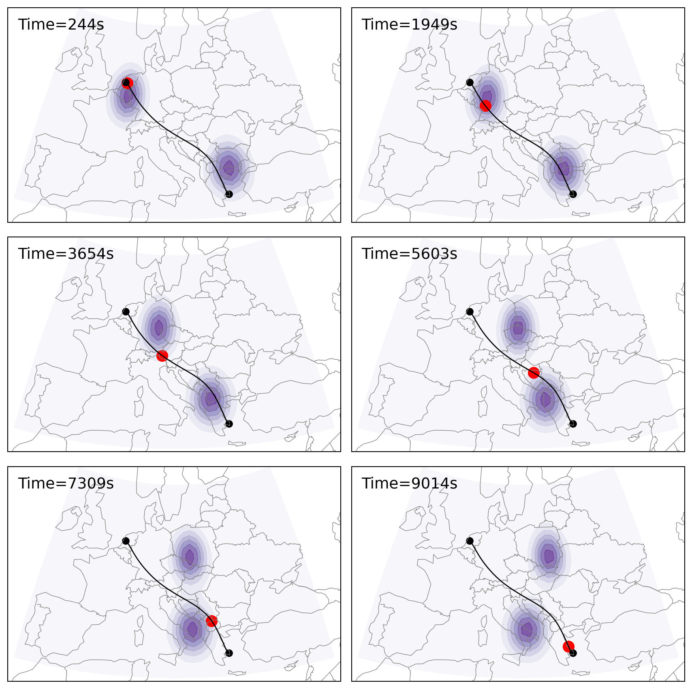

import numpy as np
import pandas as pd
def gaussian(x, y, z):
return (
np.exp(-((x + 3) ** 2 + (y - 1) ** 2)) + np.exp(-((x - 3) ** 2 + (y + 2) ** 2))
) * z**2
x = np.linspace(-10, 10, 40)
y = np.linspace(-5, 5, 40)
z = np.linspace(1, 2, 32)
X, Y, Z = np.meshgrid(x, y, z)
costs3d = gaussian(X, Y, Z)
costs3d = (costs3d - costs3d.min()) / (costs3d.max() - costs3d.min())
lon = np.interp(x, (min(x), max(x)), (-10, 40))
lat = np.interp(y, (min(y), max(y)), (35, 60))
alt = np.interp(z, (min(z), max(z)), (0, 40_000))
lons, lats, alts = np.meshgrid(lon, lat, alt)10 🙀 Using cost grids
In many trajectory optimization scenarios, the cost function is area-dependent. For example, we may need to avoid areas of convective weather or regions with sensitive climate conditions. In these cases, the TOP optimizer considers a 3D or 4D cost grid as part of the objective function.
To find the optimal set of control variables (i.e., speed, heading, and vertical rate), the cost grid is converted into an interpolant. This allows the non-linear optimal control process to evaluate the combined cost based on flight states (time, positions, and altitudes) throughout the entire trajectory. Subject to the constraints defined in the flight dynamics, the optimizer computes a trajectory that minimizes the total cost across the airspace.
Practically, in order to prevent the trajectory from completely deviating from the fuel-optimal route, the cost is combined with the fuel cost to provide a more realistic trajectory. In this chapter, I will explain how one can use a predefined cost grid (in both 3D and 4D) to perform the optimization of trajectories.
10.1 Cost grid in 3D
To demonstrate the use of 3D cost in flight optimization, we will first set up an example cost grid. The example flight we want to optimize is still based on the one from previous chapters, flight with the origin of EHAM and the destination of LGAV.
We first generate an artificial 2D cost grid using a Gaussian function, with the x range of (-10, 10) and y range of (-5, 5). Then the range is transformed to the longitude and latitude bounds for our flight. The 2D cost grids at different levels are dependent on the altitude, where the higher the altitude, the higher the cost.
We can visualize the cost grid at different altitude as follows:
Show the code used for visulization
import matplotlib.pyplot as plt
fig, axes = plt.subplots(2, 3, figsize=(12, 8), subplot_kw={"projection": "3d"})
for i, ax in enumerate(axes.flatten()):
ax.plot_surface(
lons[:, :, i * 6],
lats[:, :, i * 6],
costs3d[:, :, i * 6],
edgecolor="tab:blue",
lw=0.5,
alpha=0.3,
)
ax.set_zlim(0, 1)
flight_level = int(alt[i * 6] // 1000 * 10)
ax.set_title(f"FL{flight_level}")
ax.set_xlabel("longitude")
ax.set_ylabel("latitude")
ax.set_zlabel("cost", rotation=90)
plt.show()
We can construct the cost as a flattened 2D DataFrame. It is important that the DataFrame has the columns height, latitude, longitude. The height unit must be in meters.
Note
There is also a built-in logic that raises a warning if the maximum height is higher than 20,000, which can be a common mistake between ft and meters when referring to the altitude.
Example of the cost grid as apd.DataFrame:
df_cost_3d = pd.DataFrame(
np.array([lons, lats, alts, costs3d]).reshape(4, -1).T,
columns=["longitude", "latitude", "altitude", "cost"],
).assign(height=lambda x: x.altitude * 0.3048)
df_cost_3d| longitude | latitude | altitude | cost | height | |
|---|---|---|---|---|---|
| 0 | -10.0 | 35.0 | 0.000000 | 3.158413e-38 | 0.000000 |
| 1 | -10.0 | 35.0 | 1290.322581 | 3.365469e-38 | 393.290323 |
| 2 | -10.0 | 35.0 | 2580.645161 | 3.579098e-38 | 786.580645 |
| 3 | -10.0 | 35.0 | 3870.967742 | 3.799300e-38 | 1179.870968 |
| 4 | -10.0 | 35.0 | 5161.290323 | 4.026075e-38 | 1573.161290 |
| ... | ... | ... | ... | ... | ... |
| 51195 | 40.0 | 60.0 | 34838.709677 | 1.785139e-43 | 10618.838710 |
| 51196 | 40.0 | 60.0 | 36129.032258 | 1.872056e-43 | 11012.129032 |
| 51197 | 40.0 | 60.0 | 37419.354839 | 1.960458e-43 | 11405.419355 |
| 51198 | 40.0 | 60.0 | 38709.677419 | 2.050347e-43 | 11798.709677 |
| 51199 | 40.0 | 60.0 | 40000.000000 | 2.141721e-43 | 12192.000000 |
51200 rows × 5 columns
With this grid cost, we need to define an interpolant based on this grid and an objective function which is a combination of the grid cost and fuel cost.
from openap import top, aero
optimizer = top.CompleteFlight("A320", "EHAM", "LGAV", m0=0.85)
# optimizer.setup(debug=True)
interpolant = top.tools.interpolant_from_dataframe(df_cost_3d)
def objective(x, u, dt, **kwargs):
"""The final objective is the compound of grid cost and fuel"""
grid_cost = optimizer.obj_grid_cost(x, u, dt, time_dependent=True, **kwargs)
fuel_cost = optimizer.obj_fuel(x, u, dt, **kwargs)
return grid_cost + fuel_cost * 2
# generate optimal flight trajectory
# interpolant is passed to trajectory(), and internally used by obj_grid()
flight = optimizer.trajectory(objective=objective, interpolant=interpolant)Once the optimization is complete, we can visualize the trajetory with the builtin vis.trajectory() function:
top.vis.trajectory(flight)
plt.show()
We can create visualization code so that the trajectory is plotted along the cost grid at different altitudes. In the following figure, you can see the flight avoided the regions with highest cost, while maintaining a small detour to avoid excess fuel consumption.
Show the function flight_level_cost_3d() used for visulization
def flight_level_cost_3d(flight, df_cost):
from cartopy import crs as ccrs
from cartopy.feature import BORDERS
proj = ccrs.PlateCarree()
fig, axes = plt.subplots(
3,
2,
figsize=(9, 9),
subplot_kw=dict(
projection=ccrs.TransverseMercator(
central_longitude=15, central_latitude=45
)
),
)
for i, ax in enumerate(axes.flatten()):
ax.set_extent([-10, 40, 32, 60])
ax.add_feature(BORDERS, lw=0.5, color="gray")
ax.coastlines(resolution="110m", lw=0.5, color="gray")
h = df_cost.height.unique()[i * 6]
fl = int(h / 0.3048 // 1000 * 10)
df_cost_pivot = df_cost.query(f"height=={h}").pivot(
index="latitude", columns="longitude", values="cost"
)
lat, lon, val = (
df_cost_pivot.index.values,
df_cost_pivot.columns.values,
df_cost_pivot.values,
)
ax.contourf(
lon, lat, val, transform=proj, alpha=0.8, cmap="Reds", vmin=0, vmax=1
)
ax.text(0.03, 0.9, f"FL{fl}", transform=ax.transAxes, fontsize=14)
ax.plot(flight.longitude, flight.latitude, color="k", lw=1, transform=proj)
for r, p in (flight.iloc[[0, -1]]).iterrows():
ax.scatter(p.longitude, p.latitude, c="k", transform=proj)
plt.tight_layout()
plt.show()flight_level_cost_3d(flight, df_cost_3d)
Next, we modify the combined objective (grid and fuel) so that the weight of the grid cost is higher. And we can see that the optimized trajectory takes a longer detour to avoid regions with high grid cost with more fuel burnt.
def objective_2(x, u, dt, **kwargs):
"""The final objective is the compound of grid cost and fuel"""
grid_cost = optimizer.obj_grid_cost(x, u, dt, time_dependent=True, **kwargs)
fuel_cost = optimizer.obj_fuel(x, u, dt, **kwargs)
return grid_cost * 2 + fuel_cost
flight_2 = optimizer.trajectory(objective=objective_2, interpolant=interpolant)
flight_level_cost_3d(flight_2, df_cost_3d)
10.2 Cost grid in 4D
The usage of 4D cost grid is similar to 3D cost grid. The only difference is that the 4D cost grid includes a time dimension.
In the following example, we extend the 3D cost grid by adding a time dimension. The time dimension can be represented as a sequence of 3D cost grids at different time steps.
import numpy as np
import pandas as pd
def gaussian(x, y, z, t):
return (
np.exp(-((x + 3 - i) ** 2 + (y - 1) ** 2))
+ np.exp(-((x - 3 + i / 2) ** 2 + (y + 2) ** 2))
) * z**2
x = np.linspace(-8, 8, 40)
y = np.linspace(-4, 4, 40)
z = np.linspace(1, 2, 32)
X, Y, Z = np.meshgrid(x, y, z)
# add the time dimension
ts = np.arange(0, 8 * 1800, 1800) # every 30 minutes
costs4d = np.zeros((len(x), len(y), len(z), len(ts)))
for i, ts_ in enumerate(ts):
costs3d = gaussian(X, Y, Z, ts)
costs4d[:, :, :, i] = costs3d
costs4d = (costs4d - costs4d.min()) / (costs4d.max() - costs4d.min())
# scale the x,y to lon,lat bound
lon = np.interp(x, (min(x), max(x)), (-10, 40))
lat = np.interp(y, (min(y), max(y)), (35, 60))
alt = np.interp(z, (min(z), max(z)), (0, 40_000))
lons, lats, alts, tss = np.meshgrid(lon, lat, alt, ts)The 4D cost grid can be visualized at different time steps and altitudes as follows. Each rows represent the cost grid at different flight levels, and each column represents the cost grid at different time steps.
Show the code used for visulization
import matplotlib.pyplot as plt
fig, axes = plt.subplots(4, 4, figsize=(16, 18), subplot_kw={"projection": "3d"})
for i, ax in enumerate(axes.flatten()):
ax.plot_surface(
lons[:, :, i // 4 * 6, i % 4 * 2],
lats[:, :, i // 4 * 6, i % 4 * 2],
costs4d[:, :, i // 4 * 6, i % 4 * 2],
edgecolor="tab:blue",
lw=0.5,
alpha=0.3,
)
ax.set_zlim(0, 1)
flight_level = int(alt[i // 4 * 6] // 1000 * 10)
time = ts[i % 4 * 2] / 1800 / 2
ax.set_title(f"FL{flight_level} | {int(time)}h")
ax.set_xlabel("longitude")
ax.set_ylabel("latitude")
ax.set_zlabel("cost", rotation=90)
plt.show()
Similar to the 3D cost grid, we can construct the 4D cost grid as a pd.DataFrame. The DataFrame has the columns height, latitude, longitude, and ts. The height unit must be in meters.
df_cost_4d = pd.DataFrame(
np.array([lons, lats, alts, tss, costs4d]).reshape(5, -1).T,
columns=["longitude", "latitude", "altitude", "ts", "cost"],
).assign(height=lambda x: x.altitude * 0.3048)
df_cost_4d| longitude | latitude | altitude | ts | cost | height | |
|---|---|---|---|---|---|---|
| 0 | -10.0 | 35.0 | 0.0 | 0.0 | 4.836940e-23 | 0.0 |
| 1 | -10.0 | 35.0 | 0.0 | 1800.0 | 8.078512e-28 | 0.0 |
| 2 | -10.0 | 35.0 | 0.0 | 3600.0 | 1.826010e-33 | 0.0 |
| 3 | -10.0 | 35.0 | 0.0 | 5400.0 | 5.615118e-40 | 0.0 |
| 4 | -10.0 | 35.0 | 0.0 | 7200.0 | 3.049747e-38 | 0.0 |
| ... | ... | ... | ... | ... | ... | ... |
| 409595 | 40.0 | 60.0 | 40000.0 | 5400.0 | 1.995862e-32 | 12192.0 |
| 409596 | 40.0 | 60.0 | 40000.0 | 7200.0 | 6.490450e-26 | 12192.0 |
| 409597 | 40.0 | 60.0 | 40000.0 | 9000.0 | 2.871462e-20 | 12192.0 |
| 409598 | 40.0 | 60.0 | 40000.0 | 10800.0 | 1.719263e-15 | 12192.0 |
| 409599 | 40.0 | 60.0 | 40000.0 | 12600.0 | 1.393133e-11 | 12192.0 |
409600 rows × 6 columns
With the 4D cost grid, we can again define an interpolant based on this grid and an objective function which is a combination of the grid cost and fuel cost.
from openap import top, aero
optimizer = top.CompleteFlight("A320", "EHAM", "LGAV", m0=0.85)
# optimizer.setup(debug=True)
interpolant = top.tools.interpolant_from_dataframe(df_cost_4d)
def objective(x, u, dt, **kwargs):
"""The final objective is the compound of grid cost and fuel"""
grid_cost = optimizer.obj_grid_cost(
x, u, dt, n_dim=4, time_dependent=True, **kwargs
)
fuel_cost = optimizer.obj_fuel(x, u, dt, **kwargs)
return grid_cost + fuel_cost * 2
# generate the flight trajectory
# interpolant is passed to trajectory(), and internally used by obj_grid()
flight = optimizer.trajectory(objective=objective, interpolant=interpolant)Once the optimization is complete, we can visualize the trajetory with the builtin vis.trajectory() function:
top.vis.trajectory(flight)
plt.show()
We can create visualization code so that the trajectory is plotted along the cost grid at different altitudes and time steps. In the following figure, you can see the flight avoided the regions with highest cost, while maintaining a small detour to avoid excess fuel consumption. This is similar to the 3D cost grid, but with the added time dimension.
Show the function flight_level_cost_4d() used for visulization
def flight_level_cost_4d(flight, df_cost):
from cartopy import crs as ccrs
from cartopy.feature import BORDERS
proj = ccrs.PlateCarree()
fig, axes = plt.subplots(
3,
2,
figsize=(9, 9),
subplot_kw=dict(
projection=ccrs.TransverseMercator(
central_longitude=15, central_latitude=45
)
),
)
for i, ax in enumerate(axes.flatten()):
ax.set_extent([-10, 40, 32, 60])
ax.add_feature(BORDERS, lw=0.5, color="gray")
ax.coastlines(resolution="110m", lw=0.5, color="gray")
df_cost_pivot = df_cost.query(
f"height=={df_cost.height.max()} and ts=={i*1800}"
).pivot(index="latitude", columns="longitude", values="cost")
lat, lon, val = (
df_cost_pivot.index.values,
df_cost_pivot.columns.values,
df_cost_pivot.values,
)
ax.contourf(lon, lat, val, transform=proj, alpha=0.7, cmap="Purples")
current = flight.query(f"{i*1800}<ts<{i*1800+600}").iloc[0]
ax.text(
0.03, 0.9, f"Time={int(current.ts)}s", transform=ax.transAxes, fontsize=14
)
ax.scatter(current.longitude, current.latitude, color="r", lw=5, transform=proj)
ax.plot(flight.longitude, flight.latitude, color="k", lw=1, transform=proj)
for r, p in flight.iloc[[0, -1]].iterrows():
ax.scatter(p.longitude, p.latitude, c="k", transform=proj)
plt.tight_layout()
plt.show()flight_level_cost_4d(flight, df_cost_4d)